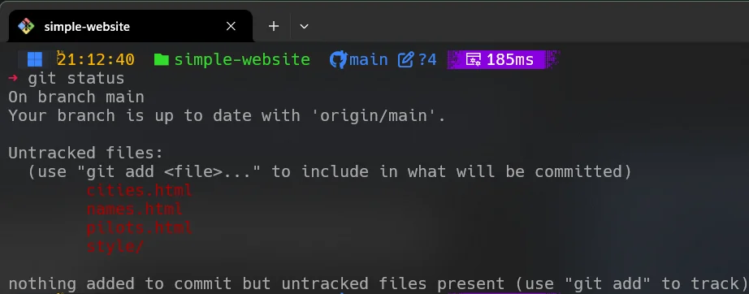

O comando git status é uma ferramenta fundamental no Git. Ele ajuda você a acompanhar
o estado do diretório de trabalho e da área de preparação (stage).
Os arquivos podem estar nos seguintes estados:
O comando git status mostra exatamente o que está acontecendo no repositório.

A imagem mostra arquivos não rastreados (untracked) e indica que nenhum arquivo está preparado para commit.
Usando git add, podemos mover arquivos modificados para o estado de preparação (staged).